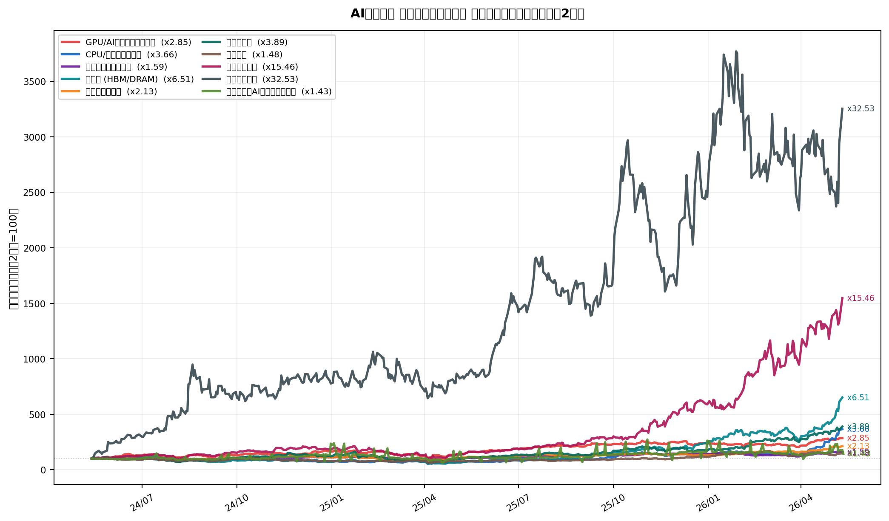

AIデータセンター・バリューチェーン全体像
AIの進化は「ソフトウェアやシリコンの魔法」によってもたらされるものではない。メガワット単位の電力、液冷の物理学、超高純度の化学素材、そして限界に挑む精密加工技術のすべてが統合されることで初めて成立する「物理インフラの極致」である。
なぜ今、インフラに着目するのか
モルガン・スタンレー（2026年）によれば、AI関連インフラ投資は2028年までに約3兆ドル規模に達すると予測されており、その80%以上はこれから投下される段階にある。マッキンゼーの試算では、2025〜2030年のデータセンター向けCapExは5.2〜7.9兆ドルに及ぶとされる。
投資機会は「GPU争奪戦（計算能力の確保）」という初期フェーズから、「物理的制約の突破（電力・冷却・極小素材）」という二次・三次フェーズへとシフトしている。
テーマ別パフォーマンス：資金はどこまで来たか
AIインフラの波はバリューチェーンの上流から下流へ、順番に資金が流れ込む構造をとっている。チャートは各テーマの代表銘柄の過去2年パフォーマンス（構成銘柄の平均、開始=100）。「既に発見され爆騰したテーマ」と「まだ資金が来ていないテーマ」を一目で把握できる。
読み方： 各線はテーマ内の代表銘柄の平均。
x3.89は2年で3.89倍（+289%）を意味する。日本株（安川電機・ファナック）は円建て騰落率のためUSD換算なし。
バリューチェーン構造図
AIデータセンターの構築を6フェーズに分解すると、以下のサプライチェーンが見えてくる。
| フェーズ | 内容 | 主な投資テーマ |
|---|---|---|
| Ph.1 原材料 | 銅・ガリウム・ゲルマニウム・フッ素化合物・ヘリウム | 素材 |
| Ph.2 半導体 | EDA/IP設計 → EUV露光 → 先進パッケージング → テスト | 半導体エコシステム / フォトニクス / 先進パッケージング |
| Ph.3 基礎インフラ | 光ファイバー・電線ケーブル・DACケーブル | 電力インフラ |
| Ph.4 ハードウェア | 液冷システム・光トランシーバー・サーバーラック | 液冷・冷却 / フォトニクス |
| Ph.5 施設建設 | DC建設施工・免震・MEP工事 | 電力インフラ |
| Ph.6 電力・運用 | 変圧器・電気工事・SMR自家発電 | 電力インフラ / SMR |
さらにDCの外側へと展開するテーマとして、宇宙インフラ・フィジカルAI・ロボティクス・DC REITがある。
5つの隠れたボトルネック
需要に対して供給が構造的に追いつかず、強力な価格決定権（プライシング・パワー）を持つ可能性が高い急所。
| # | ボトルネック | 象徴的な事実 | 詳細テーマ |
|---|---|---|---|
| ① | 超大型変圧器・配電インフラ | 納期が12週間→160週間（約3年強）に長期化 | 電力インフラ |
| ② | 次世代ガラスコア基板（TGV/LIDE） | 有機基板の反り・限界を突破する次のゲームチェンジャー | 先進パッケージング |
| ③ | EUVフォトレジスト・ペリクル | 日本企業が世界シェア96%以上を独占する絶対的チョークポイント | 半導体エコシステム |
| ④ | 液冷用クイック・ディスコネクト（UQD） | 1滴の液漏れが数億円のラック破壊を招くため価格より信頼性が優先 | 液冷・冷却 |
| ⑤ | SMR（小型モジュール炉）による自家発電 | グリッド接続申請の待機期間が米国で平均5年→ビハインド・ザ・メーターへ | SMR |
テーマ別ページ一覧
| テーマ | ページ | 優先度 |
|---|---|---|
| 素材（銅・レアメタル・特殊化学） | materials.qmd | 高 |
| 半導体エコシステム（EDA/IP・製造・装置） | semiconductor.qmd | 高 |
| フォトニクス・光インターコネクト | photonics.qmd | 高 |
| 液冷・冷却 | liquid-cooling.qmd | 高 |
| 先進パッケージング（ガラスコア基板） | glass-substrate.qmd | 高 |
| 電力インフラ（変圧器・配電・建設） | power-infra.qmd | 高 |
| SMR・自家発電 | smr.qmd | 中 |
| 宇宙インフラ・宇宙DC構想 | space.qmd | 中 |
| フィジカルAI・ロボティクス | physical-ai.qmd | 中 |
| DC REIT | reit.qmd | 低 |